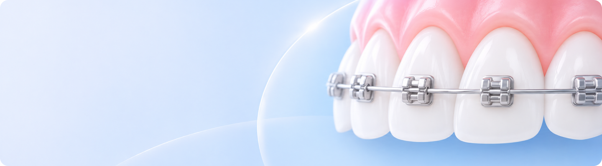

일반교정란?
치아가 고르지 않거나 위아래 치아의 맞물림이 불편하다면 전반적인 교정치료를 고려할 수 있습니다.
일반 교정은 치아의 위치와 배열을 조절하여 구강 기능의 개선을 돕고, 조화로운 치열을 만들어가는 치료입니다.

고르지않은 치열을 바르게 개선하여
자연스러운 미소와 편안한 교합을 만들어 줍니다.
이런경우 교정상담를 고려할 수 있어요
-
 치열과 구강 기능 개선을 원하는 분
치열과 구강 기능 개선을 원하는 분
-
치아가 겹치거나 고르지 않은 분
-
치아 사이의 간격이 넓어 고민인 경우
-
위아래 치아가 잘 맞물리지 않는 분
나에게 맞는 교정장치,
어떤 차이가 있을까요?
나에게 맞는 교정치료
건강한 치열을 위한 첫 걸음,
건강한 치열을 위한 첫 걸음,
정확한 상담에서 시작됩니다
같은 교정장치를 사용하더라도 치아 상태와 치료 목적에 따라 과정과 기간은 달라질 수 있습니다.
아르미 치과는 개인의 구강 상태와 고민을 고려하여 적합한 교정 방향을 함께 살펴봅니다.
교정 장치의 적용 여부, 치료 기간 및 결과는개인의 치아 상태와 진단에 따라 달라질 수 있습니다.